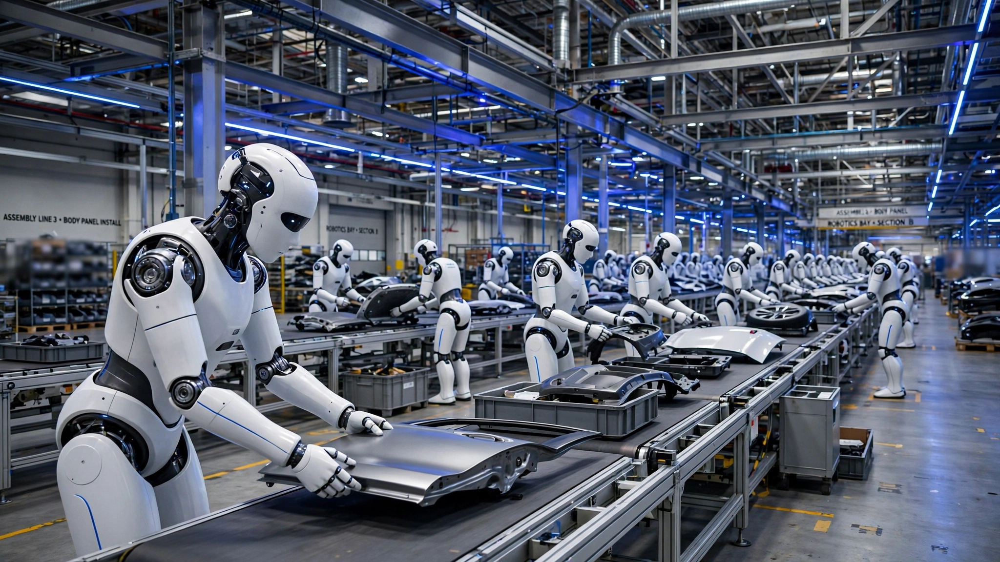

Hyundai Is Deploying 25,000 Robots in Its Factories. The Data They Generate Is Worth 1.5× More Than the Workers They Replace.
At $108,000 per robot per year in projected data revenue versus $70,000–$75,000 in labor savings, the economics of Hyundai's Atlas deployment flip the humanoid narrative: the real product isn't automation. It's training data for every other robot on Earth.

One hundred and eight thousand dollars per year. That is the projected annual data value of a single Boston Dynamics Atlas humanoid robot, derived from analyst projections that Hyundai Motor Group's robot deployment could generate $2.7 billion annually in data profits, divided by the 25,000 Atlas units Hyundai plans to deploy across its factories starting in 2028.
That number is larger than the labor cost each robot saves, substantially larger.
When Hyundai unveiled the production Atlas at CES in January, the story wrote itself. Giant automaker buys robot company, sends humanoids to the assembly line, cuts headcount, and nobody asks what happens next. Tesla has been pushing the same narrative with Optimus, Figure and Agility Robotics have raised billions around it, and every quarterly earnings call in manufacturing now includes the phrase "humanoid deployment roadmap" whether the company has robots or not. Robots do the work. Workers go home. Costs fall. Shareholders celebrate.
Except the per-robot economics tell a completely different story, one where labor replacement is the side hustle, where the robots actually lose money as workers, and where the real business is something no automaker has ever attempted at anything approaching this scale: building a data collection operation that happens to make cars, not a car factory that happens to collect data.
The Math Nobody Ran
Start with what an Atlas robot costs. Boston Dynamics has set the price target below $320,000, which the company describes as less than two years' payroll for a US manufacturing worker. Assuming a five-year useful life, that gives you $64,000 in annual depreciation. Add maintenance at 10% of purchase price and you get another $32,000. Total annual ownership cost: roughly $96,000 per robot. These numbers are conservative because traditional industrial arms last 10 to 15 years, but Atlas is first-generation humanoid hardware and five years accounts for the kind of rapid obsolescence that hit every first-generation platform from the iPhone to the Roomba.
On the labor side, Hyundai's Korean factory workers are among the best-compensated manufacturing employees alive. Average annual compensation at Hyundai Motor hit ₩117 million in 2023, roughly $83,500, according to the Korea JoongAng Daily. Pile on employer-side insurance, facility allocation, and training overhead and you approach $100,000 per worker per year. These are not entry-level numbers. Hyundai's union, with more than 43,000 members, is one of the most powerful in South Korea, and it has spent four decades ensuring that autoworker compensation reflects the profits autoworkers generate.
But here is the critical constraint. Atlas does not replace a full worker, not even close. Its battery lasts roughly four hours per charge. It carries two swappable packs and can change them autonomously, but effective uptime still falls short of a standard eight-hour shift. The initial deployment task is parts sequencing: delivering components to the right spot on the assembly line at precisely the right moment, work that matters but is not the same as welding, painting, or final assembly. A reasonable estimate: each Atlas replaces about 0.7 full-time equivalents in a Korean factory and closer to one FTE at Hyundai's new Georgia Metaplant, where base wages run $22 to $27 per hour.
| Metric | Korean Factory | US Metaplant |
|---|---|---|
| Worker annual comp (fully loaded) | ~$100,000 | ~$75,000 |
| FTEs replaced per Atlas | ~0.7 | ~1.0 |
| Annual labor savings per robot | ~$70,000 | ~$75,000 |
| Annual robot cost (deprec. + maint.) | ~$96,000 | |
| Net labor ROI per robot | −$26,000 | −$21,000 |
Read that bottom row carefully. On a pure labor-replacement basis, Atlas loses money. Each robot costs more to own and operate than the worker wages it eliminates. At Korean labor rates, the gap is $26,000 per robot per year. In Georgia, it shrinks but stays negative at $21,000. Scale those losses across a 25,000-unit fleet and Hyundai would be burning somewhere between $525 million and $650 million annually, which is a ludicrously expensive hobby for a company whose entire net profit in Q2 2025 was $3.25 trillion won.
So why deploy them at all? The answer changes everything.
The Data Is the Product
Because the robots collect something worth more than their labor savings: real-world manipulation data. Every grip, every fumble, every recovery, every near-miss with a human coworker generates training signal that can teach other robots to navigate the physical world. And in the emerging market for physical AI, that kind of data is not just valuable. It is the single scarcest input in the entire technology stack, more constrained than compute, more constrained than algorithms, more constrained than the robots themselves.
Numbers confirm the bottleneck. The robotics sector raised a record $40.7 billion in 2025, up 74% year over year, accounting for 9% of all venture funding globally, and every investor presentation in the space mentions the same constraint. Not hardware. Not software. Data. Real-world, physical, embodied robot data that cannot be scraped from the internet, that cannot be synthesized at sufficient fidelity in simulation, and that no amount of money can conjure without putting actual robots in actual environments and letting them work.
Companies are going to absurd lengths to get it. Absurd. A startup called Shift is offering free home cleaning in New York in exchange for recording cleaners with camera-equipped headwear. Training centers in China have workers wearing exoskeletons and performing the same wiping motion hundreds of times per day. Gig workers in Nigeria, Argentina, and India film themselves doing household chores for robotics companies that may or may not be able to use the footage. MIT Technology Review summarized the situation bluntly: "Physical laborers increasingly become data collectors."
Hyundai's approach is different in kind, not merely in degree. It doesn't need to hire gig workers to film themselves wiping tables, because it already controls every variable that matters. It owns the factories. It owns the robot company. It owns the supply chain for every actuator, every sensor bracket, and every battery pack those robots consume, all manufactured through Hyundai Mobis, one of the world's ten largest automotive parts suppliers by revenue. It is building the Robot Metaplant Application Center (RMAC), where Atlas learns tasks through VR teleoperation, motion capture, and physics simulation before deploying to production lines. When 25,000 robots run continuously in real automotive environments, the data output is staggering: orders of magnitude more real-world manipulation data than every other robotics company combined.
That is not hyperbole. Physical Intelligence, the San Francisco startup valued at over $2 billion, operates a small fleet of robots in a controlled lab environment. Google DeepMind, which operates one of the world's largest AI research labs, is purchasing time on Atlas units specifically to access real-world manipulation data that it cannot generate internally through simulation or synthetic training environments. AgiBot's celebrated Colosseo dataset, which was heralded as a breakthrough when it launched, contains about 1 million trajectories. Twenty-five thousand Atlas robots running two shifts per day across a dozen factory environments would generate that same volume of trajectories in a matter of weeks, possibly days, and the data would come from genuine industrial conditions rather than staged lab demos where nothing unpredictable ever happens.
Where $2.7 Billion Comes From
Korean analysts project the data business could generate $2.7 billion in annual profit. KED Global described that figure as worth "nearly half the combined market capitalization" of Hyundai Motor and Kia. Run the math yourself. Hyundai Motor trades at roughly ₩114 trillion ($81 billion). Kia sits at ₩53 trillion ($38 billion). Combined: $119 billion. Half is $60 billion. A $2.7 billion annual profit stream, valued at a conservative 20× earnings, creates a business worth $54 billion, which lands squarely in that "nearly half" range. Its data play doesn't supplement the auto business. It rivals it.
Hyundai is structuring the business around a subscription model, where the robots serve as both workers and data-collection platforms, licensing anonymized factory interaction data to external customers who need real-world training signal for their own robotic systems. The RMAC center, due to become operational in the third quarter of this year, will define factory tasks for Atlas, train behaviors through repeated real-world cycles, and validate safety and performance before production deployment. It has also partnered with Google DeepMind and Nvidia to build the AI infrastructure that converts raw factory data into commercially valuable training sets.
Per-robot, the data economics look like this: $2.7 billion divided by 25,000 units equals $108,000 per robot per year. Compare that to the $70,000 to $75,000 in labor savings and the picture inverts completely. The data value exceeds the labor value by a factor of roughly 1.5. Fold both revenue streams together and each Atlas generates about $178,000 in combined annual value against $96,000 in costs. That's a healthy 1.85× return on a piece of hardware that looked like a bad deal when evaluated on automation alone.
The Tesla Comparison Falls Apart
Tesla has been promising Optimus deployments at a target price of roughly $25,000 per unit, a number so low that the labor-replacement math works even for minimum-wage warehouse tasks. But Tesla does not own a robotics company with three decades of walking-robot IP. It has not built a production line for humanoid actuators backed by a global automotive supply chain capable of manufacturing hundreds of thousands of precision components per year, the kind of infrastructure that Hyundai Mobis already operates across three continents. It does not have 25,000 confirmed deployment slots in automotive factories. And it has never shipped a humanoid robot to a paying customer. Ever.
Agility Robotics, which we covered in detail when it filed to go public at $2.5 billion, had logged 65,000 cumulative factory hours at the time of its filing. Impressive for a startup, but a rounding error for Hyundai. Because 25,000 Atlas units running two shifts per day would accumulate 65,000 hours of operating experience in fewer than 24 hours.
The data advantage is not just about volume, though the volume alone is staggering enough to dwarf every competitor's existing dataset combined. Factory environments are structured, repeatable, and safety-critical: exactly the conditions where robot training data is most valuable and hardest to simulate. A robot fumbling with a greasy suspension component on a real assembly line, recovering from an unexpected collision, adjusting to the slightly different angle of a part that was installed three millimeters off-spec by the station upstream, produces training signal that no virtual environment can replicate with anything close to full fidelity, because the physics of deformable materials, surface friction variance, and unpredictable human proximity are precisely the phenomena that simulations handle worst.
The Strongest Case Against
The most serious objection to Hyundai's data thesis is simple: nobody has proven that factory-collected manipulation data transfers to other environments, other robot morphologies, or other task domains at a price point that justifies $2.7 billion in annual profit.
Autonomous vehicles taught this lesson expensively. Waymo has collected tens of billions of miles of driving data across more than a decade of continuous operations, data that is extraordinarily valuable to Waymo but nearly useless to Cruise, Aurora, or any other company running a different sensor suite on different hardware with different software architecture and different edge-case handling and different fail-safe policies and different everything. Data moats in autonomous vehicles turned out to be far narrower than the investors who funded them expected, because the data was too tightly coupled to the platform that collected it.
Robotics data could follow the same pattern. Hyundai's auto competitors would never train their factory robots on Hyundai's factory data. Toyota is already collaborating with Boston Dynamics on separate humanoid development. Tesla will generate its own data from Optimus. If the addressable market shrinks to third-party robotics companies, the revenue pool collapses, because most of those companies barely have revenue, let alone procurement budgets for training data at enterprise prices.
Then there is Hyundai's Korean labor union, which has taken the position that not a single robot deploys without a labor agreement. These are not empty words: South Korean industrial unions have real power, Hyundai's workers last struck in 2018, and 43% of the current 73,000-person workforce is over 50, meaning the generation with the strongest institutional loyalty is also the generation most directly threatened by humanoid automation. A prolonged standoff could delay deployment by years, and years in robotics is an eternity when five other companies are chasing the same data advantage.
What This Analysis Did Not Prove
Several things. The $2.7 billion figure is an analyst projection reported by KED Global. It is not a number Hyundai has disclosed, committed to, or built into any public financial guidance, and the absence of official confirmation should weigh heavily on any investor's assessment of the data thesis. No confirmed pricing exists for the subscription data model. None. The ₩117 million average compensation figure dates from 2023 and does not incorporate the 2024 wage increase of 4.65% or the 2025 increase of an additional ₩100,000 per month, which would push the fully loaded cost above $100,000 and slightly improve the data-vs-labor ratio but also raise the question of whether Hyundai can afford both robot deployments and continued real wage growth for its human workforce.
The $320,000 Atlas price is a ceiling, not a confirmed unit cost. Actual margins depend on actuator costs from Hyundai Mobis, battery pack pricing, and software licensing, none of which are public. The 0.7 FTE replacement ratio is our estimate based on runtime constraints and the parts-sequencing scope of initial deployment, not a figure disclosed or confirmed by Hyundai Motor Group or Boston Dynamics. Hyundai has published no per-robot FTE figure.
The biggest risk sits at the factory gate. Boston Dynamics has never manufactured anything at this scale. Its cumulative lifetime production of humanoid robots is measured in the low hundreds, charitably. Scaling to 30,000 units per year requires a 100× to 200× manufacturing ramp, and Hyundai's auto supply chain helps enormously with actuators, batteries, and assembly infrastructure but does not eliminate the fundamental challenge of building a robot that can reliably walk, grip, balance, and avoid stepping on a human's foot across millions of operating hours. The 25,000 deployment target assumes a production ramp that has no precedent in the history of humanoid robotics, a field where even the most successful programs have shipped hardware in the hundreds, not the tens of thousands.
The Playbook for Everyone Else
If you work in manufacturing automation, the lesson is stark: evaluate humanoid robots as data-collection infrastructure first and labor replacement second. Per-unit economics will not pencil out on wage savings alone for any factory paying less than roughly $30 per hour fully loaded. The data revenue is what makes the business case, and if your deployment doesn't generate data someone will pay for, your robots are just expensive workers that need more supervision than the humans they replaced.
If you invest in robotics companies, ask one question before everything else. Where is the real-world training data coming from? Simulation-only companies face a hard ceiling because sim-to-real transfer degrades on exactly the tasks that matter most: contact-rich manipulation, deformable objects, and multi-agent coordination in unpredictable environments. Companies collecting from gig workers face quality, consistency, and privacy problems that scale linearly with cost. The companies that win will be the ones with their own factories, warehouses, or logistics networks, places where robots can operate continuously in structured environments generating data that compounds in value over time.
If you are a Hyundai worker in Ulsan with more than 25 years on the line, hear this clearly: your union's negotiating position has rarely been stronger. The company needs labor peace to hit its deployment timeline. The data business depends on robots running smoothly in real factories, and those factories depend on humans who understand the line well enough to keep production flowing while 90-kilogram humanoids learn to walk among them. That leverage is real, so use it wisely. Negotiate transition support, retraining guarantees, and a share of the data revenue your labor environment makes possible, because the window where your presence and the robot's data collection are both essential will not stay open forever.
The Bottom Line
Hyundai is not building a robot army to replace factory workers. It's building a data collection fleet that earns its keep by also doing factory work. The per-robot data value of $108,000 per year exceeds the per-robot labor savings of $70,000 to $75,000, making the data the majority product and the automation the minority one. If the analyst projections hold, Hyundai will have built a $54 billion data business inside a car company, funded by robots that lose money as workers but print it as sensors. That is either the most ambitious industrial strategy since Toyota invented lean manufacturing, or the most expensive bet on a market that doesn't exist yet. The honest answer is that nobody knows which, and the window for finding out starts in 2028 when the first Atlas units hit real assembly lines and either validate or demolish the most ambitious industrial data strategy any automaker has ever attempted.